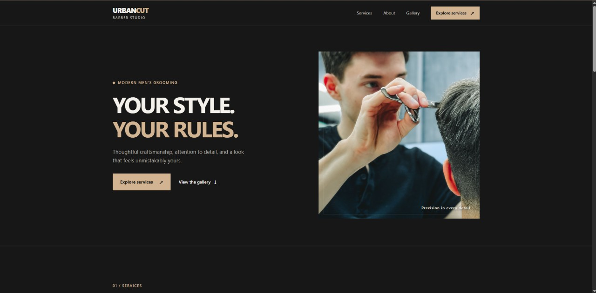
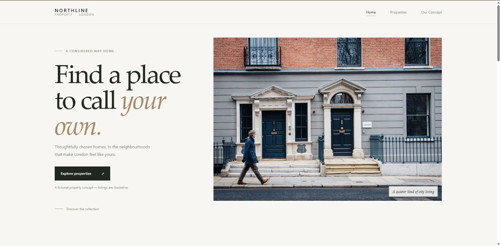

Independent Web Developer · AI-assisted workflow
Modern websites.
Built with purpose.
I create clean, responsive websites for businesses and independent brands, combining modern design with AI-assisted development.
PORTFOLIO / 2026
Thoughtful design.
Practical development.
A better place to start.
Scroll to explore
DESIGN × CODE × AIAVAILABLE FOR SELECT PROJECTS
01 Selected work
Ideas, made
into websites.
Independent concept projects exploring how clear design and useful details can bring a business online.
urbancut / studio

GROOMING, REFINED.
URBAN
CUT.
BOOK YOUR CHAIR ↗
EST. FOR THE CITY — 2025
Barbershop Website Concept
URBAN CUT
A responsive barbershop website concept featuring a refined dark visual identity, clear service presentation, and smooth navigation.
- HTML
- CSS
- JavaScript
- AI-assisted development
View live website ↗
northline / property

NORTHLINE PROPERTYMENU +
FIND YOUR PLACESpace to
move forward.EXPLORE PROPERTIES ↗
Real Estate Website Concept
NORTHLINE PROPERTY
A modern real estate website concept with interactive property filtering, detailed listing views, and responsive layouts.
- HTML
- CSS
- JavaScript
- AI-assisted development
View live website ↗
Both projects are independent concept work, created for portfolio purposes.
02 What I can help with
Good websites
start with clarity.
A focused set of services for getting a clear, capable website off the ground.
01Landing Pages
Modern, responsive landing pages focused on clear presentation and user experience.
Business Websites
Professional websites for small businesses, independent brands, and service providers.
Website Redesign
Refreshing existing websites with improved layouts, modern styling, and responsive design.
V.
Add your portrait
in the next step
ABOUT / 01
03 A little about me
Building my
practice, one site
at a time.
I'm an independent, early-career web developer creating thoughtful websites with an AI-assisted workflow. I care about the details that make a site feel considered: modern design, responsive layouts, and functionality that works as expected.
I use AI tools as part of my development process, alongside hands-on work with the web technologies behind each project.